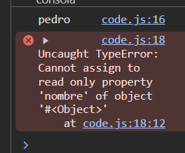
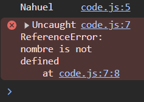
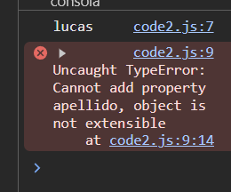
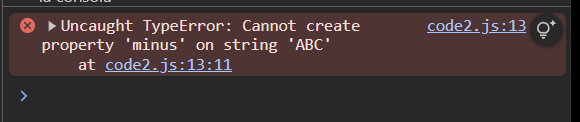
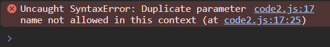
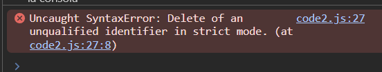
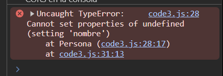
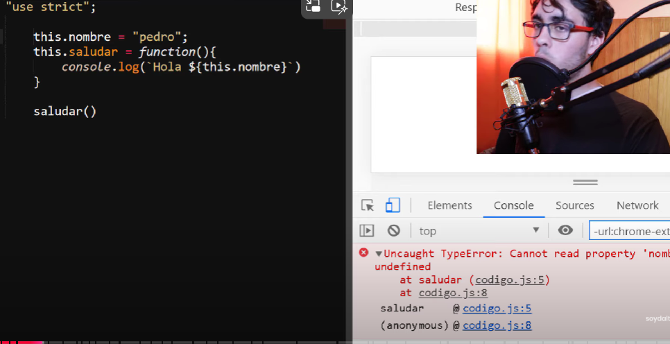
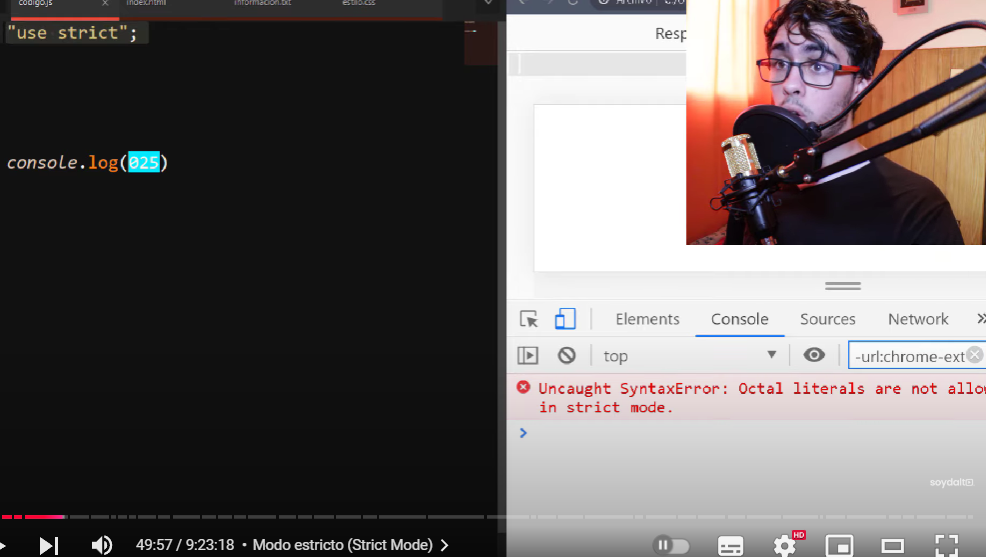

Desde Ecma Script 6 se introdujo la opción de strict mode, la cual nos permite que el interprete agregue limitaciones a la sintaxis, obligandonos a usar mejores prácticas y evitando los errores propios del lenguaje.
"use strict"; "use strict";
let name1 = "Nahuel"
console.log(name1)
nombre = "Nahuel"//error
console.log(nombre)
Sin el modo estricto al olvidarse de declarar una variable se declara automatica como var y ya no se usa var por problemas de especificidad
Si intentamos sobrescribir una propiedad (writeable: false), normalmente no funciona, pero no recibimos aviso del intento fallido. Modo estricto captura el error y nos lo avisa.
"use strict";
const obj = {}
//forma alternativa de definir propiedades
Object.defineProperty(obj, 'nombre', {value: 'pedro', writable : false})// writable : false no deja sobrescribir
console.log(obj.nombre)
obj.nombre = "Pepe"
console.log(obj.nombre)

"use strict";
const obj = {nombre : "lucas"};
Object.preventExtensions(obj);//prohibimos definir nuevas propiedades
console.log(obj.nombre);
obj.apellido = "Dalto";//error pero sin modo estricto no avisa

"use strict";
const str = "ABC";
str.minus = "abc";
console.log(str.minus)

"use strict";
function hablar (texto, texto){
console.log(texto)//si hay 2 parámetros iguales la función toma la última
}
hablar("pepo","pipo")

Ante estos casos en lugar de ignorarlo captura el error
podes eliminar propiedades de objetos
"use strict";
const obj1 = {
nombre: "Nano"
}
delete obj1;
console.log(obj1.nombre)

Las funciones constructoras pasan a ser mas complejas y dejan de funcionar normalmente, es recomendable usar la sugar sintax de class introducida en ES6
"use strict";
function Persona(nombre) {
this.nombre = nombre; // Error: Cannot set property 'nombre' of undefined
}
const obj = Persona("Pocho"); // Falta 'new'

Funciones Constructoras: Por convención, las funciones constructoras en JavaScript se nombran con una letra inicial mayúscula. Esto ayuda a distinguirlas de las funciones normales y señala que deben ser usadas con la palabra clave new.
Uso de new: En modo estricto, es importante usar new al llamar a una función constructora. Si no se usa new, this no se referirá al nuevo objeto creado, sino que será undefined, lo que causará un error.
"use strict";
function Persona(nombre) {
this.nombre = nombre;
this.saludar = function() {
console.log(`Hola ${this.nombre}`);
};
}
const obj = new Persona("Pocho");
obj.saludar(); // Salida: Hola Pocho
Funciones Constructoras: Cuando usas una función constructora con new, this se refiere al nuevo objeto creado. Sin new, this será undefined en modo estricto, lo que causará un error.
Funciones Normales: En funciones normales, this será undefined en modo estricto si no se establece explícitamente. En modo no estricto, this se refiere al objeto global (window en navegadores).
En modo estricto, this se comporta de manera más predecible y segura, ayudando a evitar errores comunes. Asegúrate de usar new al llamar a funciones constructoras y declarar todas las variables explícitamente para evitar problemas.
Los números octales pueden producir errores sin modo estricto

console.log(0o25)//muestra 21 en modo estricto
console.log(025)//da un error en modo estricto
console.log(025)//muestra 21 en modo normal